Settle
Less deciding.
More room for a daily reset.
When someone feels overwhelmed, choosing how to begin should not add to the effort. I designed Settle’s onboarding, guided exercises, and progress flows around a simple journey: check in, take a short reset, and reflect.
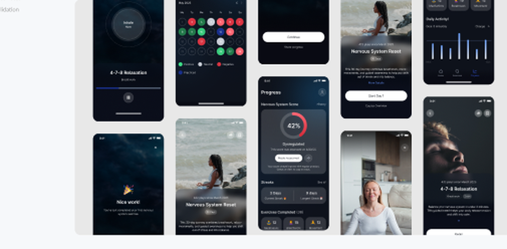
How do you make starting feel smaller?
The challenge was to make the first exercise easy to find and start, then offer a simple way to reflect and return. I designed for both a quick reset and a longer-term practice.
One experience, two moments to open it.
The app serves two main states of mind: finding immediate calm during a busy day, and building a deliberate daily habit over time. The experience needs to support both without getting in the way.
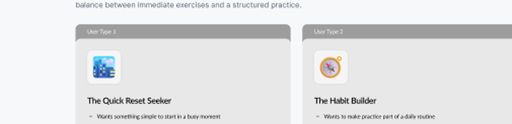
Organise around the practice, not the catalogue.
I grouped the experience into four connected moments: check in, find an exercise, practice, and review progress. This provides a clear path through the feature set.
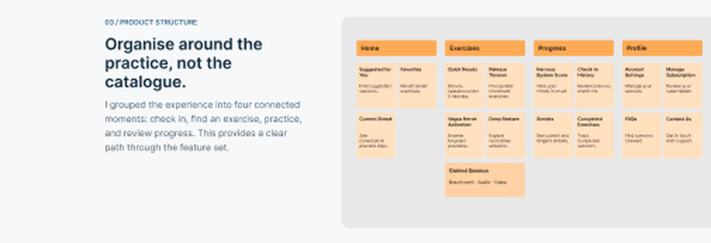
A first reset before a lasting habit.
The journey moves from a short onboarding check-in to one guided exercise, then reflection and progress. The design intent is to make the first session understandable before asking users to build a routine.
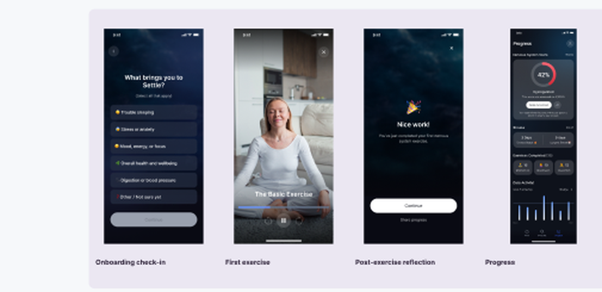
Offer a starting point without removing choice.
I compared browsing-led, quick-reset, and daily-practice concepts. The final Home combines suggested sessions with favorites and a streak summary: a starting point for newcomers, with continuity for returning users.
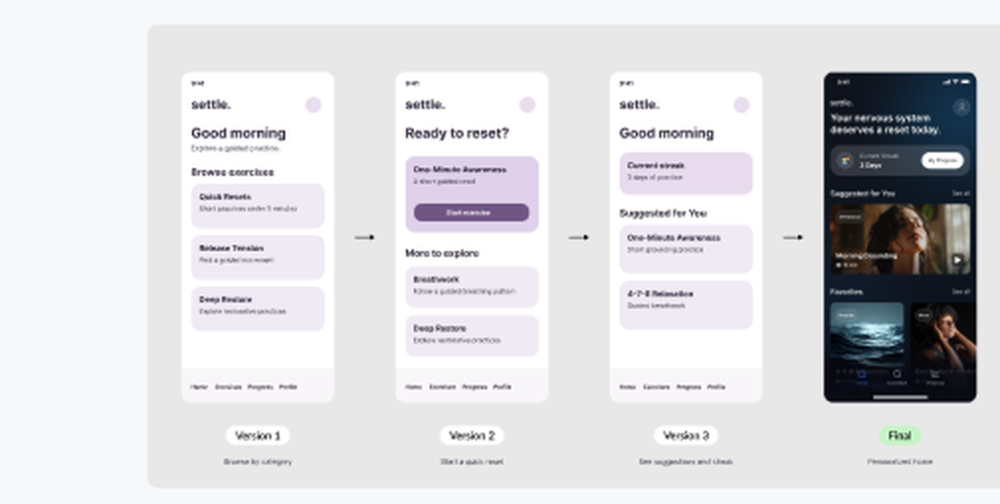
A calm path through the daily practice.
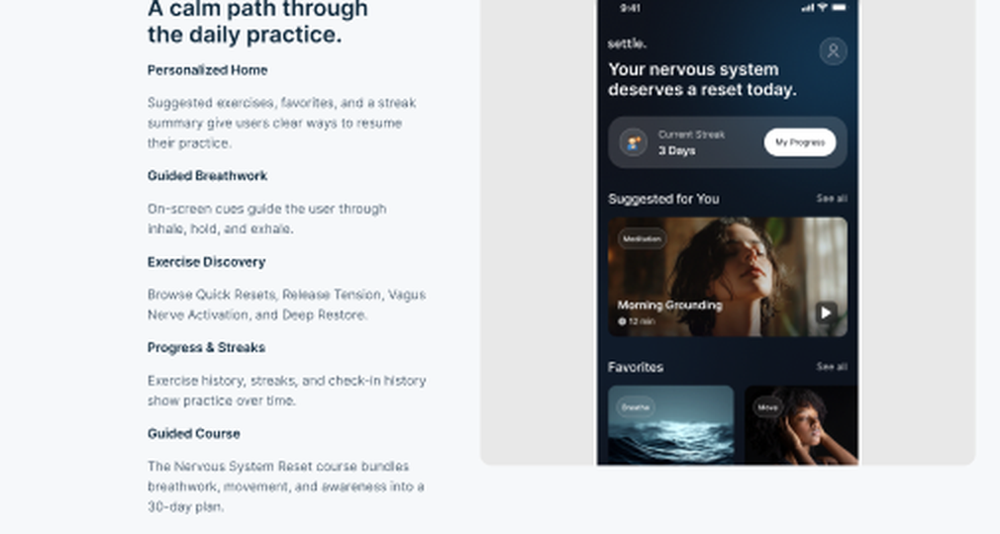
Guide the exercise. Leave room to reflect.
Short guided exercises and the 30-day course support different levels of commitment. A reflection after practice gives the session a deliberate ending instead of sending users straight into more content.
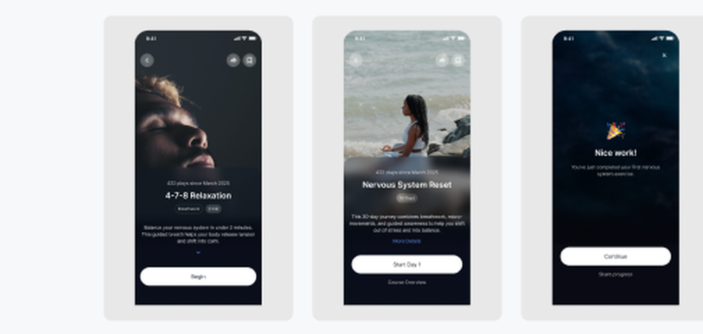
Carry the same promise from store to product.
Settle’s blue palette and Inter typography connect the app with the Play Store artwork. The listing uses real app previews and short headlines to explain the daily reset experience.
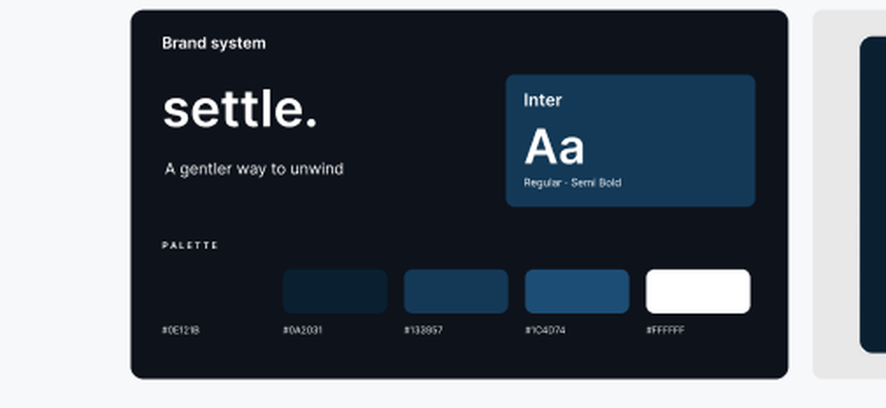
Specify the experience between the screens.
The handoff separates onboarding, exercises, progress, and account flows. Alternate states and animation notes explain how key interactions should behave, not just how the final screens look.
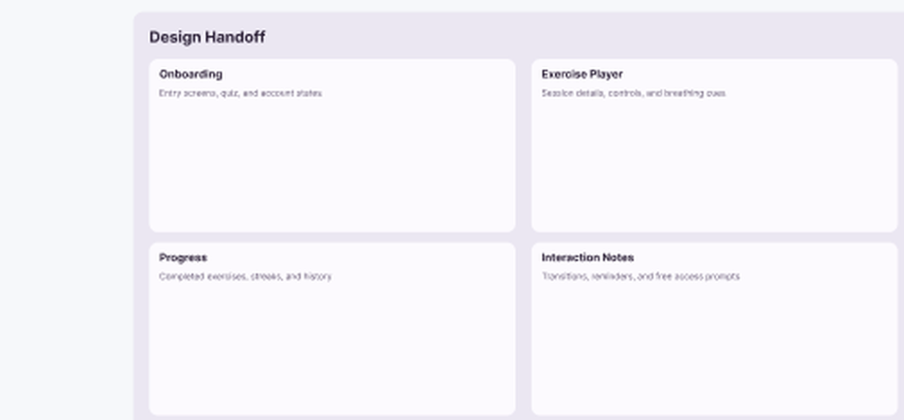
Support repetition without a single prescribed path.
Favorites make exercises easy to find again. Optional reminders, shareable milestones, and guided courses offer different ways to continue practicing. The next test is whether this feels supportive rather than demanding.
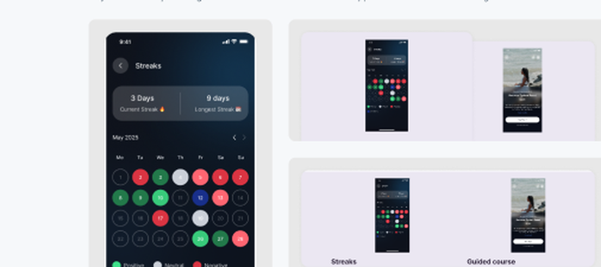
Make the first reset feel complete.
One guided exercise gives new users a clear place to begin. A brief post-session prompt then asks what they noticed, connecting the action to reflection.
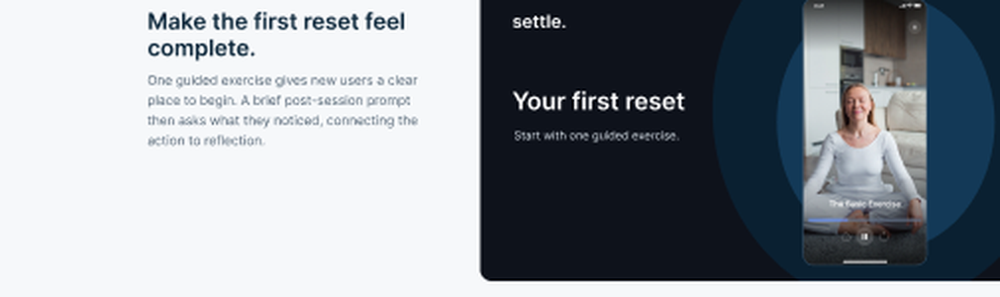
Designed for a habit. Not yet proven to build one.
The work defines the onboarding, guided sessions, and progress experience. A usability study should test whether people can start a reset and return to it; habit or wellness impact has not been established here.
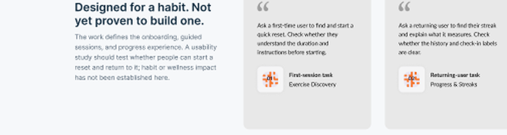